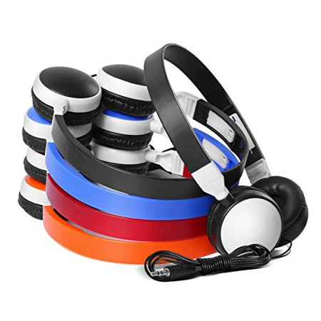

Running headphones: The Ultimate Buying Guide

There are many styles and prices to choose from when it comes to running headphones. There are so many options that it can be hard to choose the right one for you. This article will help you to understand four important aspects to consider when choosing running headphones.
Which style suits you best? ? There are four main types of headphones: circumaural (over your ear), supraaural (on the top of the ear), earbuds (like those that came with your iPod) and in-ear monitors. Before you jump into the details, consider which style of bulk school classroom headphones is best for your needs.
These headphones completely surround the ear, and can be too heavy and bulky to be worn while running. These headphones will be eliminated from our consideration from the beginning.
Ear-buds that came with your player probably are not suitable for running. They can easily fall out and have poor sound quality. In-ear headphones that are specifically made for running would be a better option. These are similar to earbuds, but have an over-the ear or behind-the neck clip or band to secure them. This style's quality and durability can vary greatly so make sure you read the reviews.
The in-ear headphones, also known as IEMs or "in-ear monitors", are another option. IEMs are comfortable and fit well in the ear. They also block out any distracting noises. The bass response of IEMs is excellent because they form a tight seal inside your ear canal.
The supra-aural, or "on top" of the ear variety is finally available. These headphones are still the same style as your 1980s Walkman, despite improvements in quality. These headphones have a soft padding that covers the ear and not inside it. Supra-aural headphones are preferred by many people, but can slip while exercising. The foam pads can also get wet from sweat. There are models that can be used for running.
How about sound quality Even if the headphones are of the same design, sound quality can differ greatly between them. Some people are content to listen to music and not care about the sound quality. If you spend the time to test a pair of headphones that are high-quality, it will be difficult to return to low-quality sounds. If you are like me, you will end up purchasing many pairs of headphones in search for the perfect sound. Although sound quality is important, headphones that are designed for running will be used more to focus on running and less on the sound. Some headphones are perfect for running, but also great to listen to when you're relaxing at home. Pay attention to the bass response of headphones. Good bass response is essential for those who enjoy rock, techno, hip hop, or any other bass-heavy genres. It makes the difference between exciting, dynamic music that gets your blood pumping, and dull, lifeless noise.
Are they sturdy? If you're looking for headphones that can be worn while running or performing other types of exercise, durability and build quality should be your top priorities. Your headphones can be damaged by sweat, rubbing against clothes, and being stuffed in your gym bag. You can read reviews to find out which headphones are able to withstand the punishment. If the headphones break after a month, it is not worth spending your hard-earned money. bulk school classroom headphones
What other features are you looking for? Many headphones now include an in-line microphone and remote control for Apple iPhones and iPods. These remotes are great for controlling the volume and track, as well as taking calls without having to take your device out of your pocket. This feature can be very convenient. This feature might not be necessary if you prefer to start your playlist right at the start of a run, and not mess around with it.
Some people value comfort more than sound quality. Others are happy to accept some discomfort if they find a sound that they like. In life, compromises must be made, and headphones are no exception. You won't find headphones that excel in all categories. These four factors will help you find the right headphones for you in your budget.
One final note about running headphones: Be careful if you are running in traffic. Although headphones are great at blocking out distractions they can also block out sound from oncoming cars. I would recommend that you choose over-the-ear headphones that allow ambient sound to pass through. This is better than an in-ear IEM design which can block out a lot of outside sound. Good luck with your search!